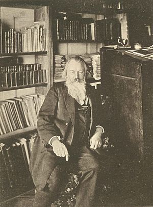

Brahms's first symphony, Op. 68, appeared in 1876, though it had been begun (and a version of the first movement had been announced by Brahms to Clara and to Albert Dietrich) in the early 1860s. During the decade it evolved very gradually; the finale may not have begun its conception until 1868. Brahms was cautious and typically self-deprecating about the symphony during its creation, writing to his friends that it was "long and difficult", "not exactly charming" and, significantly "long and in C Minor", which, as Richard Taruskin points out, made it clear "that Brahms was taking on the model of models [for a symphony]: Beethoven's Fifth".
In May 1876, Cambridge University offered to grant honorary degrees of Doctor of Music to both Brahms and Joachim, provided that they composed new pieces as "theses" and were present in Cambridge to receive their degrees. Brahms was averse to traveling to England, and requested to receive the degree 'in absentia', offering as his thesis the previously performed (November 1876) symphony. But of the two, only Joachim went to England and only he was granted a degree. Brahms "acknowledged the invitation" by giving the manuscript score and parts of his first symphony to Joachim, who led the performance at Cambridge 8 March 1877 (English premiere).
Despite the warm reception the first symphony received, Brahms remained dissatisfied and extensively revised the second movement before the work was published. There followed a succession of well-received orchestral works: the Second Symphony Op. 73 (1877), the Violin Concerto Op. 77 (1878), dedicated to Joachim who was consulted closely during its composition, and the Academic Festival Overture (written following the conferring of an honorary degree by the University of Breslau) and Tragic Overture of 1880. The commendation of Brahms by Breslau as "the leader in the art of serious music in Germany today" led to a bilious comment from Wagner in his essay "On Poetry and Composition": "I know of some famous composers who in their concert masquerades don the disguise of a street-singer one day, the hallelujah periwig of Handel the next, the dress of a Jewish Czardas-fiddler another time, and then again the guise of a highly respectable symphony dressed up as Number Ten" (referring to Brahms's First Symphony as a putative tenth symphony of Beethoven).
Brahms was now recognised as a major figure in the world of music. He had been on the jury which awarded the Vienna State Prize to the (then little-known) composer Antonín Dvořák three times, first in February 1875, and later in 1876 and 1877 and had successfully recommended Dvořák to his publisher, Simrock. The two men met for the first time in 1877, and Dvořák dedicated to Brahms his String Quartet, Op. 34 of that year. He also began to be the recipient of a variety of honours; Ludwig II of Bavaria awarded him the Maximilian Order for Science and Art in 1874, and the music loving Duke George of Meiningen awarded him in 1881 the Commander's Cross of the Order of the House of Meiningen.
At this time Brahms also chose to change his image. Having been always clean-shaven, in 1878 he surprised his friends by growing a beard, writing in September to the conductor Bernhard Scholz: "I am coming with a large beard! Prepare your wife for a most awful sight." The singer George Henschel recalled that after a concert "I saw a man unknown to me, rather stout, of middle height, with long hair and a full beard. In a very deep and hoarse voice he introduced himself as 'Musikdirektor Müller' ... an instant later, we all found ourselves laughing heartily at the perfect success of Brahms's disguise". The incident also displays Brahms's love of practical jokes.
In 1882 Brahms completed his Piano Concerto No. 2, Op. 83, dedicated to his teacher Marxsen. Brahms was invited by Hans von Bülow to undertake a premiere of the work with the Meiningen Court Orchestra. This was the beginning of his collaboration with Meiningen and with von Bülow, who was to rank Brahms as one of the 'Three Bs'; in a letter to his wife he wrote: "You know what I think of Brahms: after Bach and Beethoven the greatest, the most sublime of all composers." The following years saw the premieres of his Third Symphony, Op. 90 (1883) and his Fourth Symphony, Op. 98 (1885). Richard Strauss, who had been appointed assistant to von Bülow at Meiningen, and had been uncertain about Brahms's music, found himself converted by the Third Symphony and was enthusiastic about the Fourth: "a giant work, great in concept and invention". Another, but cautious, supporter from the younger generation was Gustav Mahler who first met Brahms in 1884 and remained a close acquaintance; he rated Brahms as superior to Anton Bruckner, but more earth-bound than Wagner and Beethoven.
In 1889, Theo Wangemann, a representative of the American inventor Thomas Edison, visited the composer in Vienna and invited him to make an experimental recording. Brahms played an abbreviated version of his first Hungarian Dance and of Josef Strauss's Die Libelle on the piano. Although the spoken introduction to the short piece of music is quite clear, the piano playing is largely inaudible due to heavy surface noise.